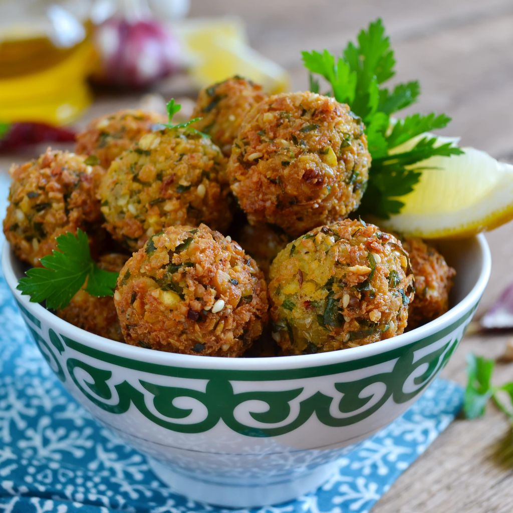

Lasagna

Description
Plat traditionnel italien qui se prépare avec des couches de pâtes superposées, accompagnées d'une sauce contenant des tomates, du fromage et de la viande.
Ingrédient
- 200 g de pois chiches
- 1 oignon moyen
- 1 bouquet de persil
- 3 c.à.s de farine
- 1 c.à.c de cumin en poudre
- 1 c.à.c de coriandre en poudre
- sel
- huile de friture
- 500 g de fèves sèches
- 1 c.à.c de paprika
- 3 c.à.s de basilic frais haché
- 2 gousses d'ail
Prépration
- Faites tremper les pois chiches et les fèves dans l'eau 12 h, les égoutter et les cuire 45 mn à l'auto cuiseur.
- Peler oignon et ail, les hacher ainsi que le persil.
- Passer les fèves et les pois chiches au mixer (ou robot).
- Mélanger avec le persil, l'oignon, l'ail, la farine, les épices, le sel.
- Pétrissez le tout avec vos mains en ajoutant un peu d'eau si nécessaire. Rassemblez la pâte et laisser reposer au réfrigérateur pendant minimum 30 mn.
- Façonner une trentaine de boulettes de la grosseur d'une pièce de 2 euros.
- Les faire frire 2/3 mn puis les égoutter sur du papier absorbant.
- Servir chaud ou froid avec des petites sauces tomates aux herbes, ou sauces yaourts.